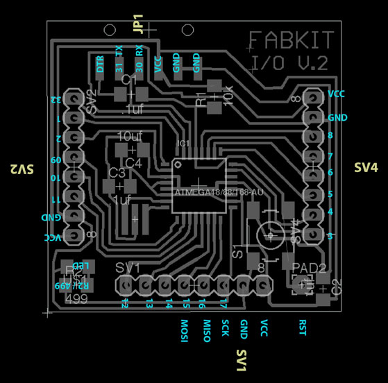

Networking and Communication
FabKits Serial Communication

It is possible to chain FabKits together in such a way as to get communication between the two. Having FabKit-FabKit communication can be useful for many projects, such as having one FabKit to run motors and having another sense the surroundings and then relay commands to the other FabKit. This can be done in several methods serial port, among others.
I followed this tutorial for the Networking and Communication assignment. It focuses on Arduino-Arduino communication through the serial ports (RX and TX). The Fritzing scheme below shows the simple connection among pcbs. Note that note that TX goes to RX and RX goes to TX.

FabKits PinOut
I used this pinout for ATMEGA168 to understand where Tx, Rx and FabKit-Arduino corresponding pins are located before starting wiring and coding the boards.

To let the two FabKit communicate, I needed to prepare two sketches, the first sending a data (an input) to the second that had to give an output according to the data received: a first arduino as sender, and the second as receiver. When the FabKit sender sends via serial port "1", the FabKit receiver lights up a LED. When the sender sends a "0", the receiver shut down the LED.

Sender
The FabKit sender sketch:
// Arduino send data to serial to another Arduino
void setup() {
// initialize
Serial.begin(9600);
}
void loop() {
Serial.print('0');
delay(100);
Serial.print('1');
delay(100);
}
Receiver
The FabKit receiver sketch:
// Arduino read data from serial from another Arduino
const int ledPin = 13; // the number of the LED pin
char data;
void setup() {
// initialize
pinMode(ledPin, OUTPUT);
Serial.begin(9600);
}
void loop() {
data = Serial.read();
if (data == '1') {
digitalWrite(ledPin, HIGH);
// Debug if the data check works
Serial.print("ok");
} else {
digitalWrite(ledPin, LOW);
}
delay(100);
}
FabKits power supply